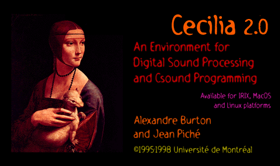

CECILIA version 2.0
ON-LINE HELP
Introduction
The CECILIA Main Window
Variable substitution
Setting up CECILIA
The CECILIA Interface Window
The CECILIA scores
CECILIA concepts
The Interface Tool bar
Special functions for sound information
The CECILIA Editor
The CYBIL composition language
The CECILIA Tutorials
Using CECILIA
Using CECILIA to Program Csound
Building CECILIA modules
The interface objects
cfilein
ctoggle
cpopup
cslider
cgraph
csepar
Credits
Copyright © Jean Piché and Alexandre Burton, 1995-98